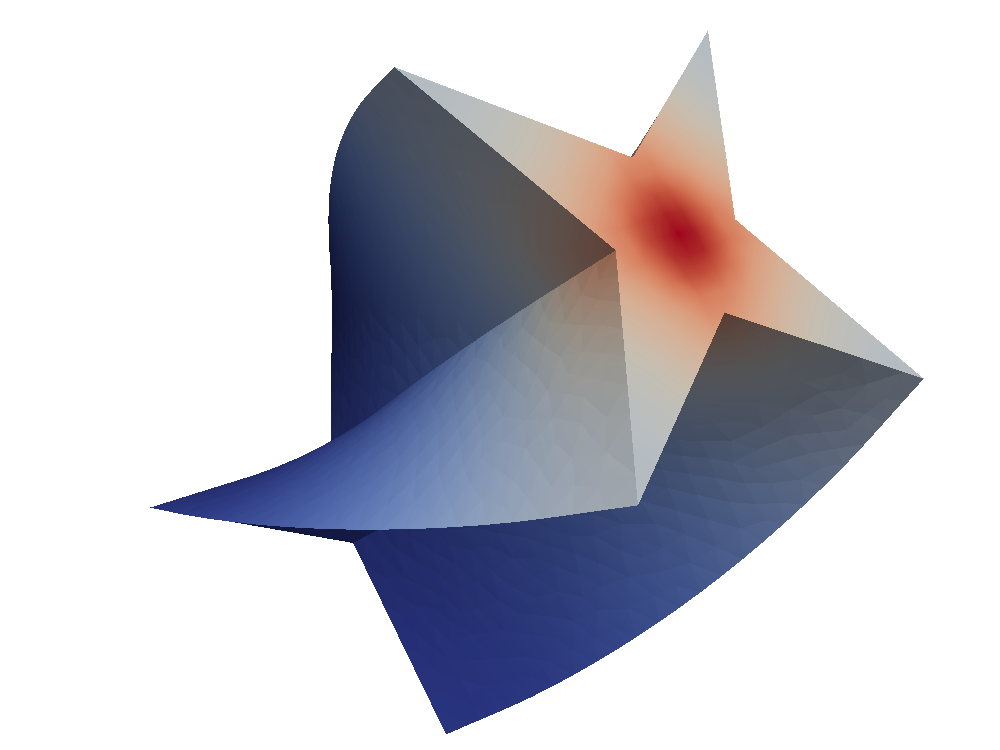

Finite Element Methods: a first example¶
In the foloowing we introduce the basic components of a finite element method:
constructing a tesselation of the computational domain
setting up a discrete function space and working with functions defined over the grid
defining the mathematical model to solve
solving the (non linear) system arising from the discretization of the model by the Galerkin method
[1]:
import time, numpy, math, sys
try:
import petsc4py
petsc4py.init(sys.argv)
from petsc4py import PETSc
except:
petsc4py = False
import dune.plotting
dune.plotting.block = False
import matplotlib
matplotlib.rc( 'image', cmap='jet' )
from matplotlib import pyplot
Setting up the Mesh¶
[2]:
from dune.grid import structuredGrid as leafGridView
gridView = leafGridView([0, 0], [1, 1], [4, 4])
from ufl import SpatialCoordinate, triangle
x = SpatialCoordinate(triangle)
initial = 1/2*(x[0]**2+x[1]**2) - 1/3*(x[0]**3 - x[1]**3) + 1
Grid Functions¶
We can easily easily integrate grid function
[3]:
from dune.fem.function import integrate
mass = integrate(gridView, initial, order=5)
print(mass)
1.333333333333333
and plot them using matplotlib or write a vtk file for postprocessing
[4]:
from dune.fem.plotting import plotPointData as plot
plot(initial, grid=gridView)
gridView.writeVTK('initial', pointdata={'initial': initial})
from dune.fem.function import uflFunction
initial_gf = uflFunction(gridView, name="ufl", order=1, ufl=initial)
mass = 0
for element in gridView.elements:
mass += initial_gf(element,[0.5,0.5]) * element.geometry.volume
print(mass)
(1.328125)
Discrete Spaces¶
Setting up a discrete function space and some grid function
[5]:
from dune.fem.space import lagrange as solutionSpace
space = solutionSpace(gridView, order=2)
So far we used grid functions defined globally. An important subclass of grid functions are discrete functions over a given discrete function space. The easiest way to construct such functions is to use the interpolate method on the discrete function space:
[6]:
u_h = space.interpolate(initial, name='u_h')
and plot them using matplotlib or write a vtk file for postprocessing
[7]:
u_h.plot(grid=gridView,gridLines="white")
u_h_n = u_h.copy(name="previous")
Models and Schemes¶
Now we can set up our PDE model As an example we will study the Forchheimer problem :cite:Kieu which is a scalar, nonlinear parabolic equation
where the diffusion tensor is given by
and \(f=f(x,t)\) is some forcing term. On the boundary we prescribe Neumann boundary conditions \(\nabla u \cdot n = g\) and initial conditions \(u=u_0\).
We will solve this problem in variational form and using Crank Nicholson in time
on a domain \(\Omega=[0,1]^2\). We choose \(f,g\) so that the exact solution is given by
[8]:
from ufl import exp
exact = lambda t: exp(-2*t)*(initial - 1) + 1
from ufl import TestFunction, TrialFunction
from dune.ufl import Constant
u = TrialFunction(space)
v = TestFunction(space)
dt = Constant(0, name="dt") # time step
t = Constant(0, name="t") # current time
from ufl import dx, grad, div, grad, dot, inner, sqrt
abs_du = lambda u: sqrt(inner(grad(u), grad(u)))
K = lambda u: 2/(1 + sqrt(1 + 4*abs_du(u)))
a = ( dot((u - u_h_n)/dt, v) \
+ 0.5*dot(K(u)*grad(u), grad(v)) \
+ 0.5*dot(K(u_h_n)*grad(u_h_n), grad(v)) ) * dx
from ufl import dot, FacetNormal, ds
f = lambda s: -2*exp(-2*s)*(initial - 1) - div( K(exact(s))*grad(exact(s)) )
g = lambda s: K(exact(s))*grad(exact(s))
n = FacetNormal(space)
b = 0.5*(f(t)+f(t+dt))*v*dx + 0.5*dot(g(t)+g(t+dt),n)*v*ds
With the model described as a ufl form, we can construct a scheme class that provides the solve method which we can use to evolve the solution from one time step to the next:
[9]:
from dune.fem.scheme import galerkin as solutionScheme
scheme = solutionScheme(a == b, solver='cg')
scheme.model.dt = 0.005
def evolve(scheme, u_h, u_h_n, endTime):
time = 0
while time < (endTime - 1e-6):
scheme.model.t = time
u_h_n.assign(u_h)
scheme.solve(target=u_h)
time += scheme.model.dt
Solving the System¶
Since we have forced the system towards a given solution, we can compute the discretization error. First we define ufl expressions for the \(L^2\) and \(H^1\) norms and will use those to compute the experimental order of convergence of the scheme by computing the time evolution on different grid levels.
[10]:
endTime = 0.25
exact_end = exact(endTime)
l2error = dot(u_h - exact_end, u_h - exact_end)
h1error = dot(grad(u_h - exact_end), grad(u_h - exact_end))
from math import log
errors = 0,0
loops = 2
for eocLoop in range(loops):
u_h.interpolate(initial)
evolve(scheme, u_h, u_h_n, endTime)
errors_old = errors
errors = [sqrt(e) for e in integrate(gridView, [l2error,h1error], order=5)]
if eocLoop == 0:
eocs = ['-','-']
else:
eocs = [ round(log(e/e_old)/log(0.5),2) \
for e,e_old in zip(errors,errors_old) ]
print('step:', eocLoop, ', size:', gridView.size(0))
print('\t | u_h - u | =', '{:0.5e}'.format(errors[0]), ', eoc =', eocs[0])
print('\t | grad(uh - u) | =', '{:0.5e}'.format(errors[1]), ', eoc =', eocs[1])
u_h.plot()
gridView.writeVTK('forchheimer', pointdata={'u': u_h, 'l2error':
l2error, 'h1error': h1error}, number=eocLoop)
if eocLoop < loops-1:
gridView.hierarchicalGrid.globalRefine(1)
scheme.model.dt /= 2
step: 0 , size: 16
| u_h - u | = 1.30402e-04 , eoc = -
| grad(uh - u) | = 3.99892e-03 , eoc = -
step: 1 , size: 64
| u_h - u | = 1.61395e-05 , eoc = 3.01
| grad(uh - u) | = 9.99160e-04 , eoc = 2.0
Alternate Solve Methods¶
Here we look at different ways of solving PDEs using external packages and python functionality. Different linear algebra backends can be accessed by changing setting the storage parameter during construction of the discrete space. All discrete functions and operators/schemes based on this space will then use this backend. Available backends are fem,istl,petsc. The default is fem which uses simple data structures and linear solvers implemented in the dune-fem package. The
simplicity of the data structure makes it possible to use the buffer protocol to seamlessly move between C++ and Numpy/Scipy data structures on the python side. A degrees of freedom vector (dof vector) can be retrieved # from a discrete function over the fem space by using the as_numpy method. Similar methods are available for the other storages, i.e., as_istl,as_petsc. The same methods are also available to retrieve the underlying matrix structures of linear operators.
Using Scipy¶
We implement a simple Newton Krylov solver using a linear solver from Scipy. We can use the as_numpy method to access the degrees of freedom as Numpy vector based on the python buffer protocol. So no data is copied and changes to the dofs made on the python side are automatically carried over to the C++ side. from Scipy.
[11]:
from dune.fem.operator import linear as linearOperator
import numpy as np
from scipy.sparse.linalg import spsolve as solver
class Scheme:
def __init__(self, scheme):
self.model = scheme.model
self.jacobian = linearOperator(scheme)
def solve(self, target=None):
# create a copy of target for the residual
res = target.copy(name="residual")
# extract numpy vectors from target and res
sol_coeff = target.as_numpy
res_coeff = res.as_numpy
n = 0
while True:
scheme(target, res)
absF = math.sqrt( np.dot(res_coeff,res_coeff) )
if absF < 1e-10:
break
scheme.jacobian(target,self.jacobian)
sol_coeff -= solver(self.jacobian.as_numpy, res_coeff)
n += 1
scheme_cls = Scheme(scheme)
u_h.interpolate(initial) # reset u_h to initial
evolve(scheme_cls, u_h, u_h_n, endTime)
error = u_h - exact_end
print("size: ", gridView.size(0), "L^2, H^1 error:",'{:0.5e}, {:0.5e}'.format(
*[ sqrt(e) for e in integrate(gridView,[error**2,inner(grad(error),grad(error))], order=5) ]))
size: 64 L^2, H^1 error: 1.61627e-05, 9.99158e-04
Using a non linear solver from the Scipy package
[12]:
from scipy.optimize import newton_krylov
from scipy.sparse.linalg import LinearOperator
from scipy.sparse.linalg import cg as solver
class Scheme2:
def __init__(self, scheme):
self.scheme = scheme
self.model = scheme.model
self.res = u_h.copy(name="residual")
# non linear function
def f(self, x_coeff):
# the following converts a given numpy array
# into a discrete function over the given space
x = space.function("tmp", dofVector=x_coeff)
scheme(x, self.res)
return self.res.as_numpy
# class for the derivative DS of S
class Df(LinearOperator):
def __init__(self, x_coeff):
self.shape = (x_coeff.shape[0], x_coeff.shape[0])
self.dtype = x_coeff.dtype
x = space.function("tmp", dofVector=x_coeff)
self.jacobian = linearOperator(scheme, ubar=x)
# reassemble the matrix DF(u) given a DoF vector for u
def update(self, x_coeff, f):
x = space.function("tmp", dofVector=x_coeff)
scheme.jacobian(x, self.jacobian)
# compute DS(u)^{-1}x for a given DoF vector x
def _matvec(self, x_coeff):
return solver(self.jacobian.as_numpy, x_coeff, tol=1e-10)[0]
def solve(self, target=None):
sol_coeff = target.as_numpy
# call the newton krylov solver from scipy
sol_coeff[:] = newton_krylov(self.f, sol_coeff,
verbose=0, f_tol=1e-8,
inner_M=self.Df(sol_coeff))
scheme2_cls = Scheme2(scheme)
u_h.interpolate(initial)
evolve(scheme2_cls, u_h, u_h_n, endTime)
error = u_h - exact_end
print("size: ", gridView.size(0), "L^2, H^1 error:",'{:0.5e}, {:0.5e}'.format(
*[ sqrt(e) for e in integrate(gridView,[error**2,inner(grad(error),grad(error))], order=5) ]))
size: 64 L^2, H^1 error: 1.61627e-05, 9.99158e-04
Using Petsc and Petsc4Py¶
Switching to a storage based on the PETSc solver package and solving the system using the dune-fem bindings
[13]:
spacePetsc = solutionSpace(gridView, order=2, storage='petsc')
# first we will use the petsc solver available in the `dune-fem` package
# (using the sor preconditioner)
schemePetsc = solutionScheme(a == b, space=spacePetsc,
parameters={"linear.preconditioning.method":"sor"})
schemePetsc.model.dt = scheme.model.dt
u_h = spacePetsc.interpolate(initial, name='u_h')
u_h_n = u_h.copy(name="previous")
evolve(schemePetsc, u_h, u_h_n, endTime)
error = u_h - exact_end
print("size: ", gridView.size(0), "L^2, H^1 error:",'{:0.5e}, {:0.5e}'.format(
*[ sqrt(e) for e in integrate(gridView,[error**2,inner(grad(error),grad(error))], order=5) ]))
size: 64 L^2, H^1 error: 1.61612e-05, 9.99160e-04
Implementing a Newton Krylov solver using the binding provided by petsc4py
[14]:
import petsc4py, sys
petsc4py.init(sys.argv)
from petsc4py import PETSc
class Scheme3:
def __init__(self, scheme):
self.model = scheme.model
self.jacobian = linearOperator(scheme)
self.ksp = PETSc.KSP()
self.ksp.create(PETSc.COMM_WORLD)
# use conjugate gradients method
self.ksp.setType("cg")
# and incomplete Cholesky
self.ksp.getPC().setType("icc")
self.ksp.setOperators(self.jacobian.as_petsc)
self.ksp.setFromOptions()
def solve(self, target=None):
res = target.copy(name="residual")
sol_coeff = target.as_petsc
res_coeff = res.as_petsc
n = 0
while True:
schemePetsc(target, res)
absF = math.sqrt( res_coeff.dot(res_coeff) )
if absF < 1e-10:
break
schemePetsc.jacobian(target, self.jacobian)
self.ksp.solve(res_coeff, res_coeff)
sol_coeff -= res_coeff
n += 1
u_h.interpolate(initial)
scheme3_cls = Scheme3(schemePetsc)
evolve(scheme3_cls, u_h, u_h_n, endTime)
error = u_h - exact_end
print("size: ", gridView.size(0), "L^2, H^1 error:",'{:0.5e}, {:0.5e}'.format(
*[ sqrt(e) for e in integrate(gridView,[error**2,inner(grad(error),grad(error))], order=5) ]))
size: 64 L^2, H^1 error: 1.61627e-05, 9.99158e-04
Using the petsc4py bindings for the non linear KSP solvers from PETSc
[15]:
class Scheme4:
def __init__(self, scheme):
self.model = scheme.model
self.res = scheme.space.interpolate([0],name="residual")
self.scheme = scheme
self.jacobian = linearOperator(self.scheme)
self.snes = PETSc.SNES().create()
self.snes.setFunction(self.f, self.res.as_petsc.duplicate())
self.snes.setUseMF(False)
self.snes.setJacobian(self.Df, self.jacobian.as_petsc, self.jacobian.as_petsc)
self.snes.getKSP().setType("cg")
self.snes.setFromOptions()
def f(self, snes, x, f):
# setup discrete function using the provide petsc vectors
inDF = self.scheme.space.function("tmp",dofVector=x)
outDF = self.scheme.space.function("tmp",dofVector=f)
self.scheme(inDF,outDF)
def Df(self, snes, x, m, b):
inDF = self.scheme.space.function("tmp",dofVector=x)
self.scheme.jacobian(inDF, self.jacobian)
return PETSc.Mat.Structure.SAME_NONZERO_PATTERN
def solve(self, target):
sol_coeff = target.as_petsc
self.res.clear()
self.snes.solve(self.res.as_petsc, sol_coeff)
u_h.interpolate(initial)
scheme4_cls = Scheme4(schemePetsc)
evolve(scheme4_cls, u_h, u_h_n, endTime)
error = u_h - exact_end
print("size: ", gridView.size(0), "L^2, H^1 error:",'{:0.5e}, {:0.5e}'.format(
*[ sqrt(e) for e in integrate(gridView,[error**2,inner(grad(error),grad(error))], order=5) ]))
size: 64 L^2, H^1 error: 1.61627e-05, 9.99158e-04
More General Boundary Conditions¶
So far we only used natural boundary conditions. Here we discuss how to set Dirichlet boundary conditions and use different conditions for different components of the solution.
To fix Dirichlet boundary conditions \(u=g\) on part of the boundary \(\Gamma\subset\partial\Omega\) the central class is dune.ufl.DirichletBC which takes three arguments: the discrete function space for \(u\), the function \(g\) given by a UFL expression, and a description of \(\Gamma\). There are different ways to do this. If it is omitted or None the condition is applied to the whole domain, a integer \(s>0\) can be provided which can be set to describe a part
of the boundary during grid construction as described in another place. Finally a UFL condition can be used, i.e., x[0]<0.
For vector valued functions \(u\) the value function \(g\) can be a UFL vector or a list. In the later case a component of None can be used to describe components which are not to be constrained by the boundary condition.
[16]:
from ufl import sin
from dune.ufl import DirichletBC
from dune.fem.plotting import plotComponents
from matplotlib import ticker
vecSpace = solutionSpace(gridView, dimRange=2, order=2)
x = SpatialCoordinate(vecSpace)
vec = vecSpace.interpolate([0,0], name='u_h')
uVec,vVec = TrialFunction(vecSpace), TestFunction(vecSpace)
a = ( inner(grad(uVec), grad(vVec)) + inner(uVec,vVec) ) * dx
f = ( uVec[0]*(1-uVec[1])*vVec[0] + uVec[1]*(1-uVec[0])*vVec[1] ) * dx
f = f + uVec[0]*uVec[0] * vVec[1] * ds
bc = DirichletBC(vecSpace,[sin(4*(x[0]+x[1])),None])
vecScheme = solutionScheme( [a == f, bc],
parameters={"newton.linear.tolerance": 1e-9} )
vecScheme.solve(target=vec)
plotComponents(vec, gridLines=None, level=2,
colorbar={"orientation":"horizontal", "ticks":ticker.MaxNLocator(nbins=4)})
To prescribe \(u_2=0\) at the bottom boundary is also straightforward
[17]:
bcBottom = DirichletBC(vecSpace,[sin(4*(x[0]+x[1])),0],x[1]<1e-10)
vecScheme = solutionScheme( [a == f, bc, bcBottom],
parameters={"newton.linear.tolerance": 1e-9} )
vecScheme.solve(target=vec)
plotComponents(vec, gridLines=None, level=2,
colorbar={"orientation":"horizontal", "ticks":ticker.MaxNLocator(nbins=4)})
A 3D example using a GMesh file¶
In this example we use pygmsh to construct a tetrahedral mesh and olve a simple laplace problem
[18]:
# The following code is taken from the `pygmsh` homepage
try:
import pygmsh
geom = pygmsh.built_in.Geometry()
poly = geom.add_polygon([
[ 0.0, 0.5, 0.0], [-0.1, 0.1, 0.0], [-0.5, 0.0, 0.0],
[-0.1, -0.1, 0.0], [ 0.0, -0.5, 0.0], [ 0.1, -0.1, 0.0],
[ 0.5, 0.0, 0.0], [ 0.1, 0.1, 0.0] ], lcar=0.05)
axis = [0, 0, 1]
geom.extrude( poly, translation_axis=axis, rotation_axis=axis,
point_on_axis=[0, 0, 0], angle=2.0 / 6.0 * numpy.pi)
mesh = pygmsh.generate_mesh(geom, verbose=False)
points, cells = mesh.points, mesh.cells
domain3d = {"vertices":points, "simplices":cells["tetra"]}
except ImportError: # pygmsh not installed - use a simple cartesian domain
from dune.grid import cartesianDomain
domain3d = cartesianDomain([-0.25,-0.25,0],[0.25,0.25,1],[30,30,60])
from dune.alugrid import aluSimplexGrid as leafGridView3d
gridView3d = leafGridView3d(domain3d)
space3d = solutionSpace(gridView3d, order=1)
from ufl import conditional
u = TrialFunction(space3d)
v = TestFunction(space3d)
x = SpatialCoordinate(space3d)
scheme3d = solutionScheme((inner(grad(u),grad(v))+inner(u,v))*dx ==
conditional(dot(x,x)<.01,100,0)*v*dx,
solver='cg')
uh3d = space3d.interpolate([0],name="solution")
scheme3d.solve(target=uh3d)
# note: plotting with matplotlib not yet available for 3d grids
gridView3d.writeVTK('3dexample', pointdata=[uh3d])

Listing installed components¶
The available realization of a given interface, i.e., the available grid implementations, depends on the modules found during configuration. Getting access to all available components is straightforward:
[19]:
from dune.utility import components
# to get a list of all available components:
components()
# to get for example all available grid implementations:
components("grid")
available categories are:
discretefunction,function,globalBasis,grid,model,operator,scheme,solver,space,view
available entries for this category are:
entry function module
----------------------------------------
alu aluGrid dune.alugrid
aluconform aluConformGrid dune.alugrid
alucube aluCubeGrid dune.alugrid
alusimplex aluSimplexGrid dune.alugrid
oned onedGrid dune.grid
polygon polygonGrid dune.polygongrid
polygrid polyGrid dune.vem
ug ugGrid dune.grid
yasp yaspGrid dune.grid
----------------------------------------